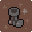
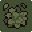
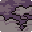
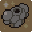
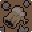

Maldições
Um malefício que se soma ao benefício de um item, tanto mais provável quanto mais raro for o item. O Mercador é, de longe, a fonte mais comum delas.
Existe uma segunda categoria: maldições autônomas, que já vêm com um benefício embutido junto do malefício, sem precisar de item pra parear. O Mercador nunca oferece essas. Elas só aparecem num Santuário corrompido (25% de chance) ou quando você aceita o Demônio numa sala de Evento.
Pareadas com item
| Maldição | Efeito real | |
|---|---|---|
 | Passos Pesados | −22% de velocidade de movimento. |
 | Pele Fina | +35% de dano recebido. |
 | Rastro Visível | +80% no alcance de detecção dos inimigos; −12% de velocidade de movimento. |
 | Peito Apertado | +50% na recarga do dash. |
 | Fragmentado | −40 de vida máxima (2 corações). A mesma maldição usada pelo Pacto de Sangue e por um dos resultados ruins do evento da Fonte. |
Autônomas
| Maldição | Benefício | Malefício |
|---|---|---|
| Pacto de Sangue | +35% dano corpo a corpo e à distância | −80 de vida máxima (4 corações) |
| Canhão de Vidro | +50% dano corpo a corpo e à distância | +50% dano recebido |
| Velocidade Proibida | +30% velocidade de movimento | −20% dano corpo a corpo e à distância |